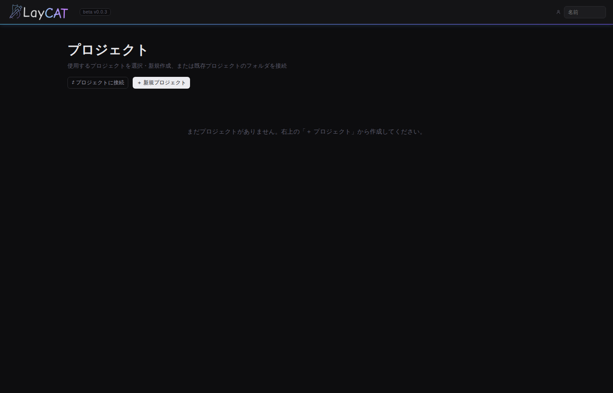
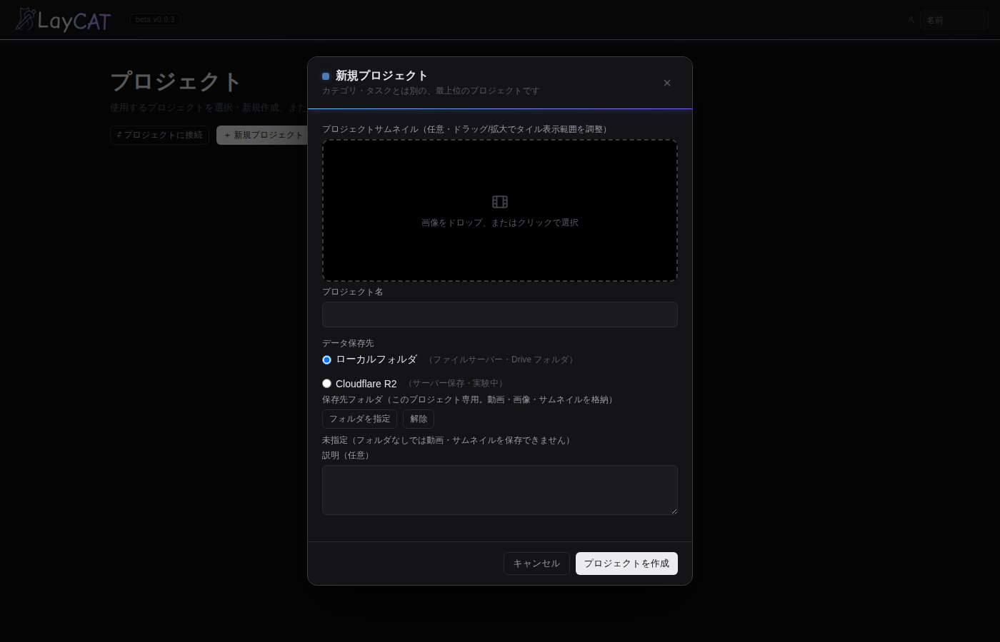

画面付きではじめ方ガイド
上から順に画面通り進めれば、動画レビューまで到達できます。
ブラウザで下の URL を開くだけ。Chrome / Edge 推奨（フォルダを直接読み書きする機能が使えるため）。
最初はプロジェクトが 1 つもありません。左上の 「＋ 新規プロジェクト」 を押します。

プロジェクト名を入力して、保存先を選ぶのがポイント。
📁 ローカルフォルダ 推奨
- PC のフォルダ / Google Drive 同期フォルダ
- ログイン不要・追加費用なし
- 個人 & 小規模チーム向き
☁️ Cloudflare R2 チーム
- クラウド保存（どこからでもアクセス）
- Google ログイン必須
- 本格運用向き

プロジェクトの中を「3 階層」で組み立てます：
- まず カテゴリ（例：EP01）を追加
- カテゴリの設定で 工程テンプレート（LAY / ANIM / COMP など）を登録
- カテゴリの下に ショット を追加 → 工程が自動で全部作られる
SC001, SC010 のようにゼロ埋めで。 数字順に並ぶようになります。左サイドバーで 工程（タスク） を選ぶと、右側にタスク画面が開く。右上の 「＋ 動画」 を押してファイルを選ぶだけ。

動画タイルの右上 ⤢ ボタン（または動画クリック）でフル画面のレビュー画面が開きます。

タスク画面上部で 「作業」「チェック」担当 を選ぶ。チェック担当が未設定だと通知が誰にも飛びません。
STEP 5 と同じ手順でもう一度動画をアップすると、ステータスが自動で「チェック待ち」に。担当者の 🔔 ベルに通知が飛びます。

プロジェクトの 「進捗」タブ で、ショット × 工程 × 担当者を横並びで俯瞰できます。

右上の 🔔 ベルアイコンを押すと通知パネルが開きます。メンション（@自分）とチェック依頼が並びます。
もっと使いこなす
よく使う 2 つの機能：REEL（連続再生）と サブミット（束ね提出）。
複数ショットの最新版を 1 本の映像のように連続再生できる機能。上映会・ラッシュチェック・カット並べ確認に。
- プロジェクト画面上部の 「REEL」タブ を開く
- 「＋ 新規リール」 を押して名前を入力（例：「EP01_ラッシュ_v03」）
- タスク画面の動画タイルを REEL パネルに ドラッグ&ドロップ、または「＋ この版を追加」で並べる
- ▶ 再生すると、リストの順にシームレスにつながって再生される
- クリップの並び替えはドラッグ、削除は 🗑 ボタン

「今週のレイアウト 8 カットまとめて提出」のように、複数タスクの版を 1 束にまとめてチェック依頼を出す機能。1 通の通知でチェック担当が全体を把握できます。
- プロジェクト画面上部の 「サブミット」タブ を開く
- 「＋ 新規サブミット」 を押す
- サブミット名を入力（自動で
YYYYMMDD_001が入る）＋ 全体コメント（オプション） - 対象にしたい タスク × 版 を選ぶ（同じショットの複数工程・複数ショットを混ぜて OK）
- 「提出」を押すと、含めた全タスクが 一括で「チェック待ち」 になり、チェック担当に 1 件の通知 が届く
よくあるつまずき
動画が再生できない（コーデック警告）
Animation / ProRes 等の非対応コーデックです。H.264 の mp4 / mov に変換してから再アップしてください。
音が出ない
レビュー画面の 🔊 / 🔇 ボタン と音量スライダを確認。ミュートや音量 0 になっていませんか。それでも出ない場合は元動画に音声トラックが無い可能性。
チェック依頼の通知が来ない
タスクの「チェック」担当者に自分が設定されているか確認。それから 🔔 の「🗘 最新」を押すか、アプリをリロード。
他人と共有したい（フォルダ運用）
Google Drive / Dropbox の同期フォルダにプロジェクトを置き、共有相手にも同じフォルダを「フォルダを選ぶ」で開いてもらいます。
他人の更新に気づけない
ライブ同期はしません。作業前に 🔔 → 「🗘 最新」 かリロードで最新を取り込んでください。
データはどこに？
フォルダ運用：選んだフォルダの laycat.project.json と media/。R2 運用：Cloudflare R2 のバケット。